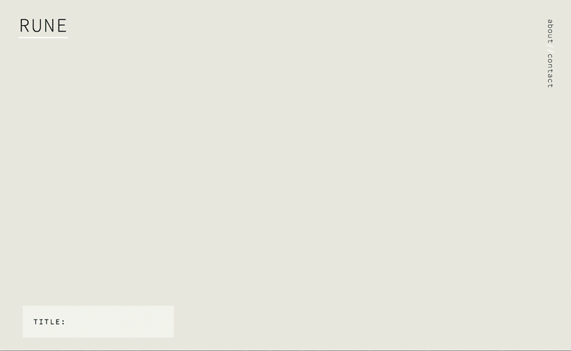
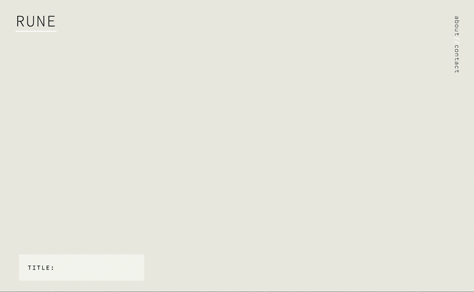

Rune
Rune is a communicative tool created by Olivia Johnson that translates each letter of the English alphabet into a graphic form, producing a unique composition for every word or phrase.
Give Rune a try here.
 

Rune was initially created as a stand-alone Processing sketch to be displayed in a multidisciplinary design exhibition. The audience was free to experiment with the program and create their own compositions. Each saved composition was printed and displayed, resulting in a collection of user-generated art and dialogue.